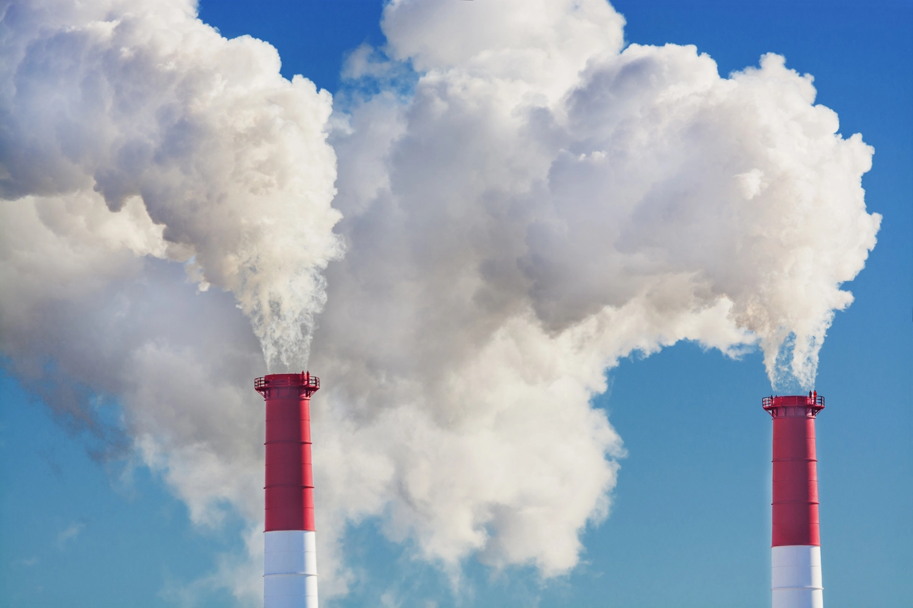

The process in which some toxic pollutants are added to our environment is called pollution.It makes the climate harmful for both all the living beings. Pollution mainly happens because of men made activities, whether done unknowingly or deliberately. Nowadays, it has become an important issue worldwide. Many countries are facing defective childbirths and high mortality rates due to pollution.It makes natural things like water, air, soil, etc. harmful for both the humans and the animals. The pollutants that mix in the air directly affect living beings as they get into the body directly while breathing. Water pollutants are in the same way hazardous for living beings. In today’s time, manufacturing and construction units are significant sources of pollution. People living next to a manufacturing group often fall ill either by noise or air pollution. But the irony is that humans are the ones who are deliberately polluting the environment. They’re just opening their own. We can’t get an utterly pollution-free world. Still, we can decrease the level of pollution around us by becoming more sensible and controlling our activities, causing pollution.

| Name | Phone Number |
| Parneet Kaur | 623-6754-3443 |
| Rahul | 876-932-7772 | Avneet Kaur | 623-6754-3443 |